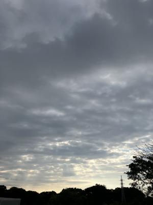
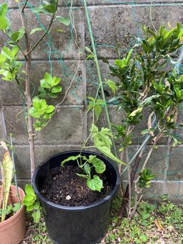
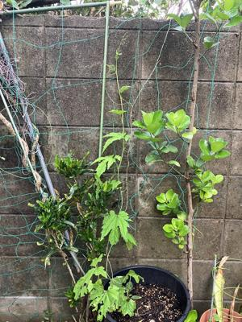
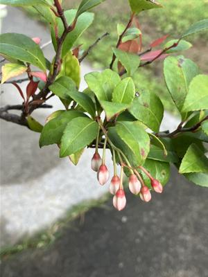
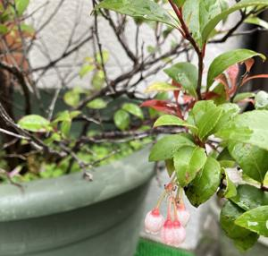

うるがいの話 ある日
最新: 令和６年のシーミー【うるがいの話 ある日】とは 一日だけのプログです
『うるがいの話』の最新一日だけのプログで、通信料が少なく経済的だ。カニの画像をクリックすると全ての日付が載る『うるがいの話』サイトを表示します
|
|
【うるがいの話】 うるがい(ｳﾙｶﾞｲ urugai)とは、『もずくがに』の名前でとても大きくなります。 |
|---|---|
|
|
【カミマヤーの話】 猫のことを方言でマヤーといいます。カミマヤー（kamimayaa）とは、神の猫のことです。 |
|
【たながぁの音楽】 たながぁ（ﾀﾅｶﾞｰ tanagaa）とは手長えびのことで、何種類かあり大きいのは車 エビぐらいになります。 |

|
【ぶながぁの話】 ぶながぁ(ﾌﾞﾅｶﾞｰ bunagaa)とは、赤い髪の毛、赤い身体、そして身長は１ｍ２０ｃｍ ぐらい、川の蟹を食べているの目撃された。場所は沖縄県国頭郡大宜味村のと ある村僕の隣近所に住んでいる爺さんから、聞いた話です。 |
|
|
【ギーマの話】 ギーマ(giima)とは、山原の里山に咲くスズランに似た、 花を付けます。実は食べられます、 気が付くと口の周りが紫になっています。 |
2024年04月07日 (日）令和６年のシーミー
16:30

１０時半過ぎに、小雨が降る中コウモリ傘を持ってジョギングに行く。小雨
が降る中、とある霊園は清明（シーミー）をする人達で混雑していた。ホー
雨でやるのか？と思った。午後から、大雨の予報だったが今のところ大雨は
降っていない。明日は、大雨の予報があるダムの貯水率が上がるといいな。
出張先の朝が、１２度くらいなのでスーツの上からジャンパーをつけて作業
場所に出かける。昨日から、扇風機をつけている。出張先の週間予報を見る
と最低気温が、７度から１２度である。ジャンパーは必要である。因みに先
ほど蚊に刺された。
明日のジェットスターに乗るため、先ほどスマホでチェックイン、搭乗に必
要なＱＲコードも準備した。
出張に行っていた一週間（３月３１日と４月６日）で、ゴヤーとギーマの変
化が面白い。
ゴーヤー
 
ギーマの花
 
１６時２２分 ビットコインの総資産 ￥３０、４８２（↑６８０）